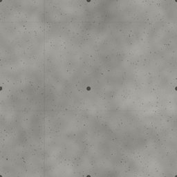
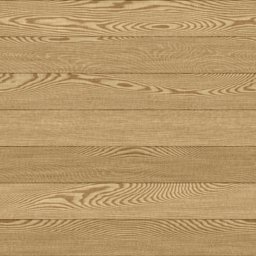
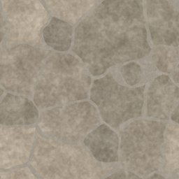
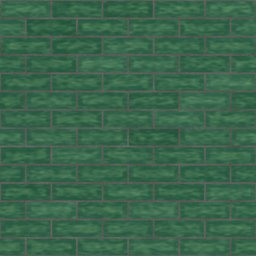
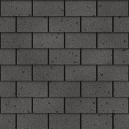

Material scout
CC0 texture prospects from Poly Haven and ambientCG for each material category of the game's surface list: one page per category, each row a look in the game with up to three candidates beside it.
87rows scouted
14categories
- Metal8 rows scouted · built 2026-10-16
- Glass and glazing3 rows scouted · built 2026-10-16
 Flooring and tile14 rows scouted · built 2026-10-16
Flooring and tile14 rows scouted · built 2026-10-16 Fabric and soft goods2 rows scouted · built 2026-10-16
Fabric and soft goods2 rows scouted · built 2026-10-16- Facility and institutional9 rows scouted · built 2026-10-16

Concrete8 rows scouted · built 2026-10-16- Drywall and interior board3 rows scouted · built 2026-10-16
- Plaster and render1 rows scouted · built 2026-10-16
- Synthetic and modern6 rows scouted · built 2026-10-16

Wood11 rows scouted · built 2026-10-16
Natural stone6 rows scouted · built 2026-10-16
Masonry3 rows scouted · built 2026-10-16
Roofing9 rows scouted · built 2026-10-16- Paving and roads4 rows scouted · built 2026-10-16